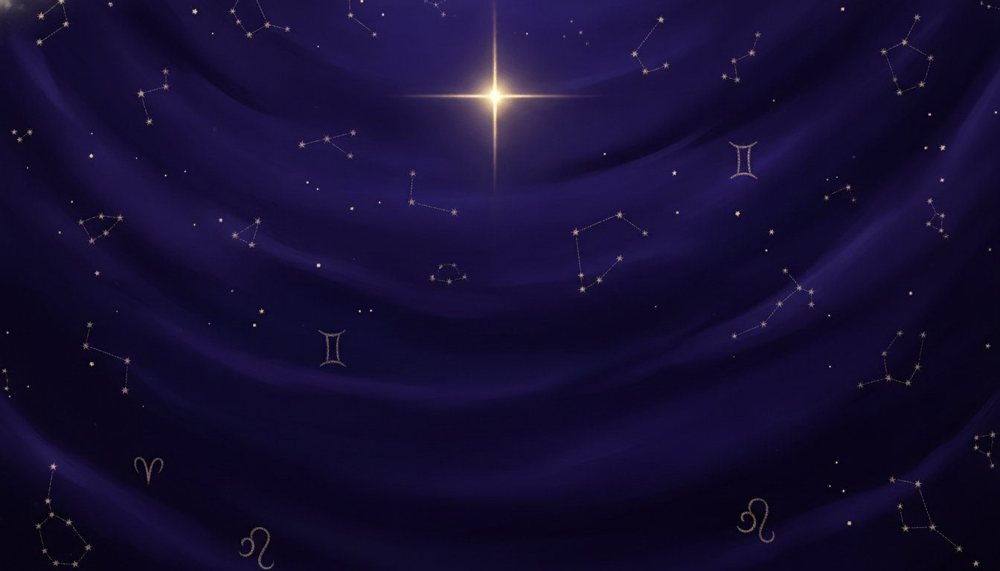
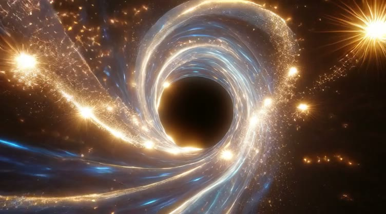
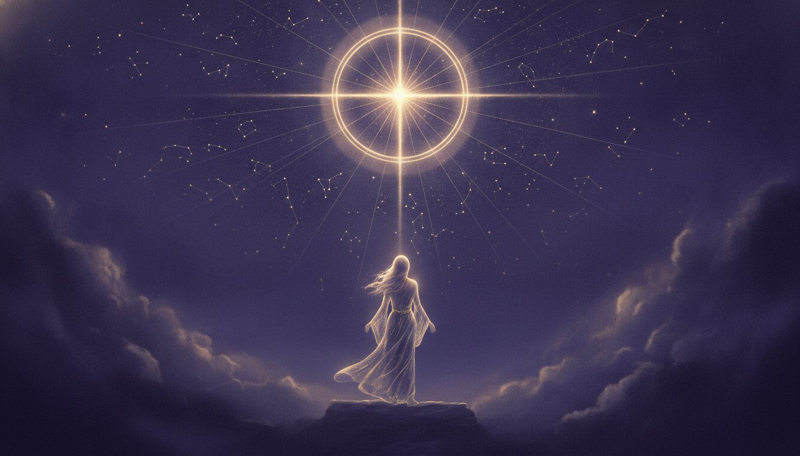

Written in the stars
The sky keeps a diary, and today's page is yours. Read what the planets are saying for your sign, then let a live psychic read the part the daily forecast never sees.
Find your sign
Choose the constellation you were born beneath. Each one carries its own weather, its own gifts, and its own way of moving through the day.

The sky is moving. So are you.
The Moon leans toward the water signs today, softening the edges of every conversation and inviting you to say the tender thing you have been holding back. Mercury runs quick and clear, so plans made now tend to hold. Venus lingers in a generous corner of the chart, warming old bonds and making new ones feel less like risk and more like recognition.
A daily forecast paints the sky in broad strokes. Your chart is far more particular. A live psychic can tell you which of these currents is actually pulling on your life right now.
Read the sky with a psychic →Go deeper than the daily
The horoscope is where the conversation starts. A psychic is where it becomes about you.
Daily Horoscope
A quick read on the day ahead for your sign. When a line lands a little too close to home, a psychic can tell you why, and what to do about it.
Ask about today →Love Horoscope
Where the heart is heading for your sign this season. Bring the name that keeps surfacing to a love psychic and read the connection between you.
Explore love readings →Your Birth Chart
The exact sky at the hour you arrived, mapped for you alone. An astrology psychic can walk you through it, house by house, in a live reading.
Read my chart →
The same sky that has guided seekers for five thousand years.
The stars set the scene. You choose the story.
Bring today's horoscope to a live psychic and hear what it means for your life. New members read from $1 per minute.
Get Your ReadingNew members from $1/min · Satisfaction guaranteed.
Satisfied or your money back. For entertainment. 18+.